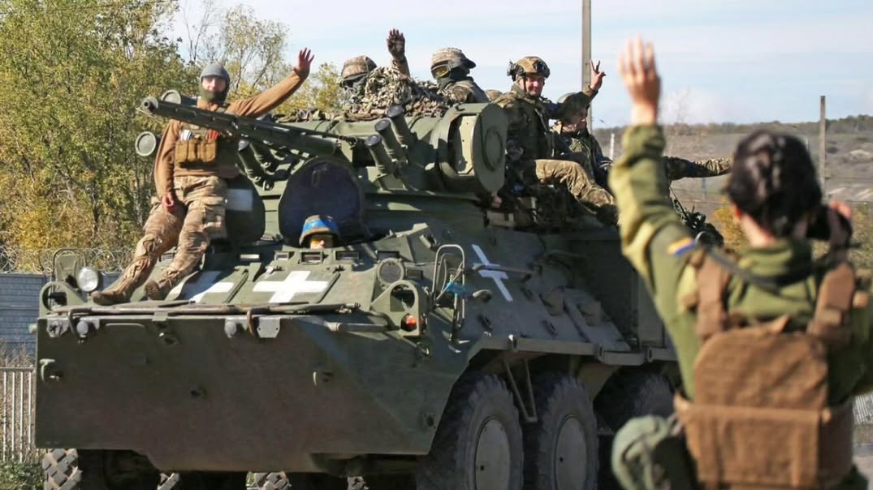

Documentary photography
A photographic record of Ukraine, documenting people, places and everyday moments through war, resilience and memory.
Photography is more than capturing images — it is about preserving emotions, light, and authentic moments.
My work focuses on natural expressions, meaningful details, and stories that deserve to be remembered.